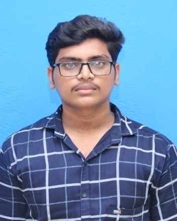

I'm Kesavan

Summary
Enthusiastic student mastering full-stack web development, dedicated to acquiring proficiency in both front-end and back-end technologies to create dynamic and responsive web applications.
Education
- Bachelor of Computer Applications- Adhiparasakthi college of Arts and Science(2021-2024)
Experience
- Full Stack web development Intern
Nov 2023-present
- Visually Appealing Interface: Created an intuitive design for a food delivery platform, utilizing advanced CSS, JavaScript, and React to elevate the user experience.
- Full-Stack Expertise: Engineered a feature-rich food delivery web app, incorporating React front end and Node.js/Express.js back end for seamless user authentication, real-time order processing, geolocation services, and database integration.
- Innovative Functionality: Implemented dynamic features such as interactive menus, order tracking, and user notifications, pushing beyond basic functions to provide a cutting-edge and immersive food delivery experience.
Skills
- HTML:⭐⭐⭐⭐⭐
- CSS:⭐⭐⭐
- JavaScript:⭐⭐⭐
- Git and GitHub:⭐⭐⭐⭐
- Postre SQL:⭐⭐⭐
- ReactJs:⭐⭐⭐
- Express.Js:⭐⭐⭐
- NodeJs:⭐⭐⭐
- Python:⭐⭐⭐⭐
Certification
- First Place (QUIZ) | One Day National Seminar on ‘MACHINE LEARNING AND SOFT COMPUTING’ | KMG College of Arts and Science
- First Place (DEBBUING) | State Level Seminar on ‘DEMAND FOR ANALYTICS IN IT SCENARIO’ | Dr.MGR Chockalingam Arts College
- Third place (CONNEXTIONS) | State Level Intercollegiate IT Fest ‘SPACE 2023’| Scared Heart College (Autonomous)
- Participated (TECH MARATHON / CODE MASTER) | National Seminar on ‘INTERNAL QUALITY ASSURANCE CELL’ | KMG College of Arts and Science
- Participated ‘NATIONAL SEMINAR ON DATA ANALYTICS AND REACTJS’ | Adhiparasakthi College of Arts and Science
- Participated ‘NATIONAL CONFERENCE ON ARITIFICAL INTELLIGENCE AND MACHINE LEARNING’ | Adhiparasakthi College of Arts and Science
Others